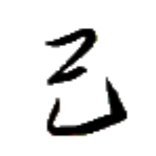
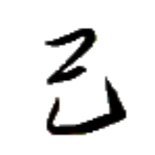
チャㇷ゚⤴ 【彼】
[名詞] あの人
[連体詞] あの人の；あの
名詞に係るときにはどちらの意味もあるが、現代パイグ語においては「あの人の」という意味で解釈されがちである。
手術 ホㇷ゚→ズィㇳ→ 【手術】
[名詞] 選び方
[名詞] (博打などでの)いかさま
在手 アイㇺ⤴ホㇷ゚→ 【在手】
[状態動詞] 持っている
[節要求動詞] ～したことがある
無手 ムン→ホㇷ゚→ 【無手】
[状態動詞] 持っていない
[節要求動詞] ～したことがない
足手 ショㇷ゚→ 【足手】
[名詞] 手足、動物の足
発音が縮約されることに注意。
 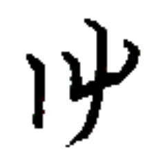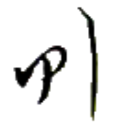
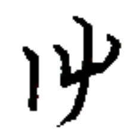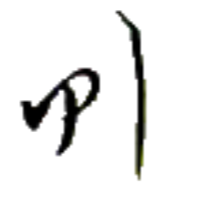
ホアㇷ゚→ 【定】【決】
[動詞] 定める、決める
[状態動詞] 準備ができている
定弓 ホアㇷ゚→グアー⤴ 【定弓】
[離合詞] 弓を構える
[名詞] セッカイクの序盤戦術のひとつ
官定 ユー→ホアㇷ゚→ 【官定】
[連体詞] 公式に定められた、標準の
政府の関与の有無に関わらず用いることができる。
迷道 バウ⤴ポウ→ 【迷道】
[離合詞] (物理的に)道に迷う、(人生において)進路に迷う
官民迷 ユー→ビアー→バウ⤴ 【官民迷】
[主語＋動詞] 統一の規範が無く、何を採用すべきか役人も民衆も戸惑っている様子。
何か規則や規範などの統一化を図るときに、毎回のように登場する決まり文句。
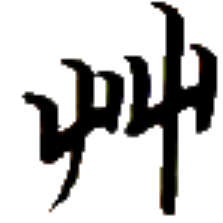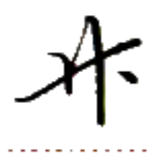
ズィㇳ→ 【術】
[接尾辞] （主に一音節の動詞の後について）～する方法
之術 ア·ズィㇳ→ 【之術】
[接尾辞] （動詞＋目的語の後について）～する方法
歪術 ブㇷ゚⤴ズィㇳ→ 【歪術】
[名詞] (セッカイクで)王が他の同色駒の代わりとなること
[名詞] 語形変化
手術 ホㇷ゚→ズィㇳ→ 【手術】
[名詞] 選び方
[名詞] (博打などでの)いかさま
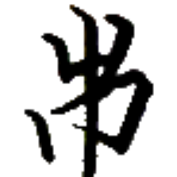 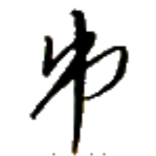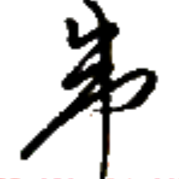
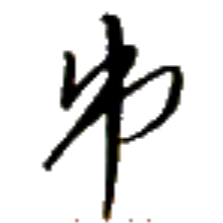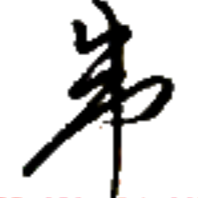
リー⤴ 【虫】【蟲】
[名詞] 動物のうち、人・鳥・魚・獣でなくてやわらかくて非常に細長いというわけではないもの